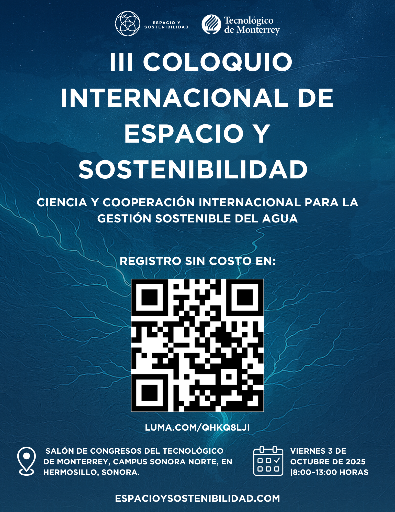

Workshop on use of NASA satellite data for water management and climate analysis, and NASA International Space Apps Challenge, in Hermosillo, Sonora, Mexico
NASA Openscapes Mentors are participating in the III International Colloquium on Space and Sustainability in Hermosillo, Sonora, Mexico. This includes leading a workshop and assisting with the NASA International Space Apps Challenge. The workshop is designed for students, researchers, professionals, and policymakers, and will cover the use of NASA satellite data for water management and climate analysis through practical Earth observation tools.
Cross-posted at openscapes.org/blog, nasa-openscapes.github.io/news.

🌠III International Colloquium on Space and Sustainability 2025
Science and International Cooperation for Sustainable Water Management
Talks, workshops, and collaborations among universities, civil society, and public agencies during the III International Colloquium on Space and Sustainability 2025 in Hermosillo, Sonora, Mexico.
🧠About the Event
The III International Colloquium on Space and Sustainability 2025 — Science and International Cooperation for Sustainable Water Management will take place on Friday, October 3, 2025, at the Congress Hall of Tecnológico de Monterrey, Sonora Norte Campus, in Hermosillo, Sonora, Mexico.
This colloquium is an international gathering that brings together representatives from government, academia, private sector, and civil society to urgently address the challenges of water, climate, and oceans, with the goal of transforming science into practical, localized solutions.
The event is based on a quadruple helix model, fostering interaction between knowledge producers, decision-makers, public interest advocates, and technological innovators.
Key themes include the use of satellite data, artificial intelligence, and open science to strengthen water resilience and accelerate meaningful climate action.
🧪 Pre-Colloquium Workshop (Optional)
As a complementary activity, an optional pre-colloquium workshop will take place on Thursday, October 2, 2025, from 3:00 p.m. to 5:00 p.m., led by Luis Alberto López, expert at the National Snow and Ice Data Center (NSIDC).
This introductory workshop is designed for students, researchers, professionals, and policymakers, and will cover the use of NASA satellite data for water management and climate analysis through practical Earth observation tools.
🯠General Objective
To foster collaboration among key sectors to territorialize climate, water, and ocean solutions through:
Open science
Remote sensing
Digital tools
Regionally grounded water governance
🌧️ Priority Topics
Drought monitoring and forecasting
Runoff and flood estimation
Water quality assessment
Irrigation demand and evapotranspiration estimation
Climate–water availability interactions
Ocean observation and sustainability
📢 During the keynote talks, an official invitation to the XXIII National Oceanography Congress will also be presented. The congress will take place at the same venue from March 3–7, 2026.
🔗 More information: https://www.asocean.org.mx/
🚀 NASA Space Apps Challenge and the Colloquium
The NASA Space Apps Challenge is the world’s largest open innovation hackathon, organized by NASA in collaboration with global partners. Every year, more than 150 countries participate in solving challenges related to Earth and space using:
Open satellite data
Citizen science
Artificial intelligence
Creative collaboration
In 2025, the III International Colloquium on Space and Sustainability will be closely integrated with the hackathon. The colloquium will conclude with the official launch of the Space Apps Hermosillo local event.
This Hermosillo event is an official extension of the Mexico City main site, with the shared goal of joining forces to become the largest Space Apps hub in the country, linking efforts across both regions.
🔗 Hermosillo site: https://spaceappssonora.org/
🔗 Official Mexico City hub: https://www.spaceappschallenge.org/2025/local-events/mexico-city/
📚 Past Editions & References
🛰️ 2023 – Guadalajara, Jalisco
The first edition of the Colloquium was held in collaboration with NASA, bringing together approximately 100 participants from academia, industry, government, and civil society.
Key topics included:
Satellite missions (ICESat-2, GEDI, MODIS, Sentinel)
Citizen science through the GLOBE Program
Open data and public policy
Sources:
🌳 2024 – Morelia, Michoacán
The second edition, titled “Space and Environmental Justice”, welcomed over 200 participants across colloquium sessions and workshops.
Key topics included:
Protection of vulnerable communities and ecosystems
The Forest Guardian Project, using satellite imagery to detect deforestation in avocado-growing regions
Participation from NASA, state authorities, and civil society organizations
Source:
🔵 Official website of the III International Colloquium on Space and Sustainability 2025:
https://espacioysostenibilidad.com/
🌠III Coloquio Internacional de Espacio y Sostenibilidad 2025
Ciencia y cooperación internacional para la gestión sostenible del agua
Charlas, mesas de trabajo y colaboraciones entre universidades, sociedad civil y agencias públicas durante el III Coloquio Internacional de Espacio y Sostenibilidad 2025, en Hermosillo, Sonora, México.
🧠Sobre el evento
El III Coloquio Internacional de Espacio y Sostenibilidad 2025 — Ciencia y cooperación internacional para la gestión sostenible del agua se llevará a cabo el viernes 3 de octubre de 2025, en el Salón de Congresos del Tecnológico de Monterrey, Campus Sonora Norte, en Hermosillo, Sonora.
Este coloquio es un encuentro internacional que reúne a representantes de gobierno, academia, empresas y sociedad civil organizada para abordar con urgencia los desafÁos del agua, el clima y los océanos, con el propósito de convertir la ciencia en soluciones aplicadas y territorializadas.
El evento se estructura bajo un modelo de cuádruple hélice, fomentando la interacción entre quienes generan conocimiento, quienes toman decisiones, quienes promueven el bien común y quienes impulsan la innovación tecnológica.
Se prioriza el uso de datos satelitales, inteligencia artificial y ciencia abierta como herramientas clave para fortalecer la resiliencia hÁdrica y acelerar la acción climática con impacto real.
🧪 Taller Pre-Coloquio (Opcional)
Como actividad complementaria al Coloquio, se ofrecerá un taller opcional el Jueves 2 de octubre de 2025, de 3:00 p.m. a 5:00 p.m., impartido por Luis Alberto López, especialista del Centro Nacional de Datos del Hielo y la Nieve (NSIDC).
Este taller introductorio está dirigido a estudiantes, investigadores, profesionales y tomadores de decisiones, y abordará el uso de datos satelitales de la NASA para la gestión del agua y el análisis climático mediante herramientas prácticas de observación terrestre.
🯠Objetivo General
Impulsar la colaboración entre sectores clave para territorializar soluciones climáticas, hÁdricas y oceánicas, mediante:
Ciencia abierta
Sensores remotos
Herramientas digitales
Gobernanza regional basada en datos
🌧️ Temas Prioritarios
Monitoreo y pronóstico de sequÁas
Estimación de escurrimientos e inundaciones
Evaluación de la calidad del agua
Cálculo de necesidades de riego y evapotranspiración
Interacciones entre clima y disponibilidad hÁdrica
Observación y sostenibilidad de los océanos
📢 Durante las charlas magistrales se presentará también la invitación oficial al XXIII Congreso Nacional de OceanografÁa, que se celebrará en el mismo campus del 3 al 7 de marzo de 2026.
🔗 Más información: https://www.asocean.org.mx/
🚀 NASA Space Apps Challenge y el Coloquio
El NASA Space Apps Challenge es el hackatón de innovación abierta más grande del mundo, organizado por la NASA junto con aliados globales. Más de 150 paÁses participan anualmente para resolver desafÁos de la Tierra y el espacio mediante:
Datos satelitales abiertos
Ciencia ciudadana
Inteligencia artificial
Colaboración creativa
En 2025, el III Coloquio Internacional de Espacio y Sostenibilidad estará estrechamente vinculado con el hackatón, ya que el evento concluirá con el banderazo oficial de la sede Hermosillo del Space Apps Challenge 2025.
Esta sede es una extensión estratégica de la sede de Ciudad de México, con el objetivo de unir fuerzas y conformar la sede más grande del paÁs, articulando esfuerzos entre ambas regiones.
🔗 Sede Hermosillo: https://spaceappssonora.org/
🔗 Sede Ciudad de México (sitio oficial): https://www.spaceappschallenge.org/2025/local-events/mexico-city/
📚 Ediciones Anteriores y Referencias
🛰️ 2023 – Guadalajara, Jalisco
Primera edición del Coloquio, organizada en colaboración con la NASA, con la participación de aproximadamente 100 personas de academia, empresas, gobierno y sociedad civil.
Temas clave:
Satélites (ICESat-2, GEDI, MODIS, Sentinel)
Ciencia ciudadana vÁa el programa GLOBE
Datos abiertos y polÁticas públicas
Fuentes:
🌳 2024 – Morelia, Michoacán
Segunda edición, titulada “Espacio y Justicia Ambiental”, con la participación de más de 200 asistentes entre coloquio y talleres.
Temas clave:
Defensa de comunidades y ecosistemas vulnerables
Proyecto Guardián Forestal, que usa imágenes satelitales para detectar deforestación en zonas aguacateras
Participación activa de la NASA, autoridades estatales y organizaciones de la sociedad civil
Fuente:
🔵 Sitio oficial del III Coloquio Internacional de Espacio y Sostenibilidad 2025:
https://espacioysostenibilidad.com/
ESTA ES LA PÁGINA DE REGISTRO Y ES GRATUITO
Citation
@online{lopez2025,
author = {Lopez, Luis and Badouin, Juan and Martinez, Juan},
title = {Workshop on Use of {NASA} Satellite Data for Water Management
and Climate Analysis, and {NASA} {International} {Space} {Apps}
{Challenge,} in {Hermosillo,} {Sonora,} {Mexico}},
date = {2025-10-02},
url = {https://openscapes.org/blog/2025-10-02-mexico-workshop/},
langid = {en}
}